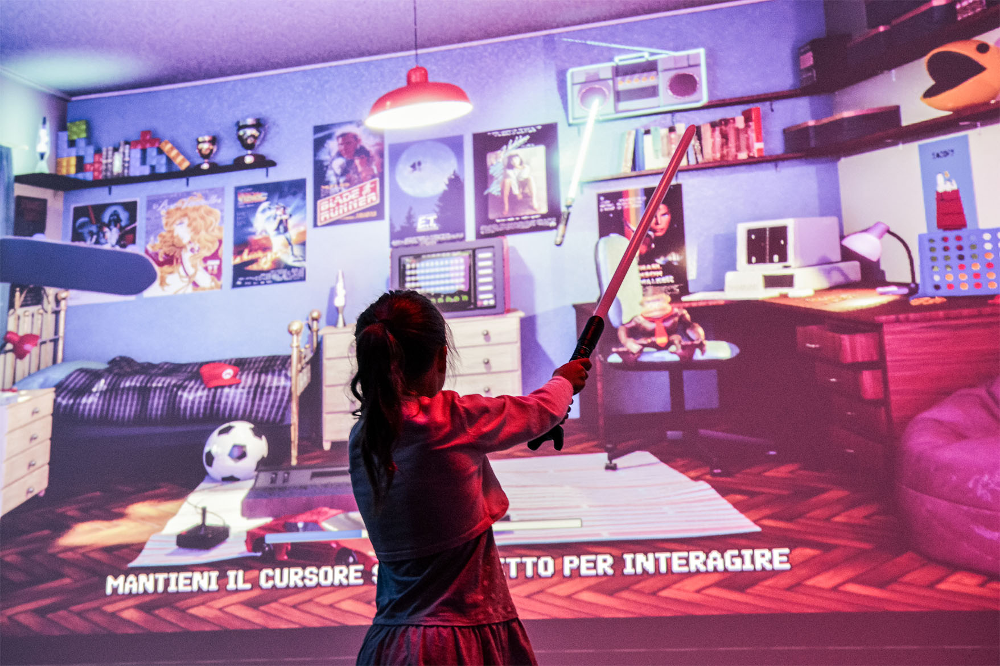
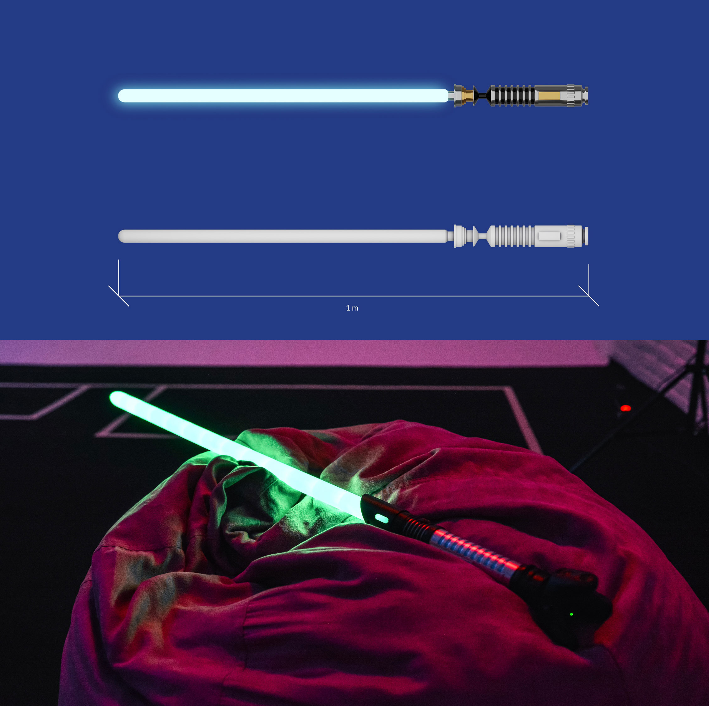
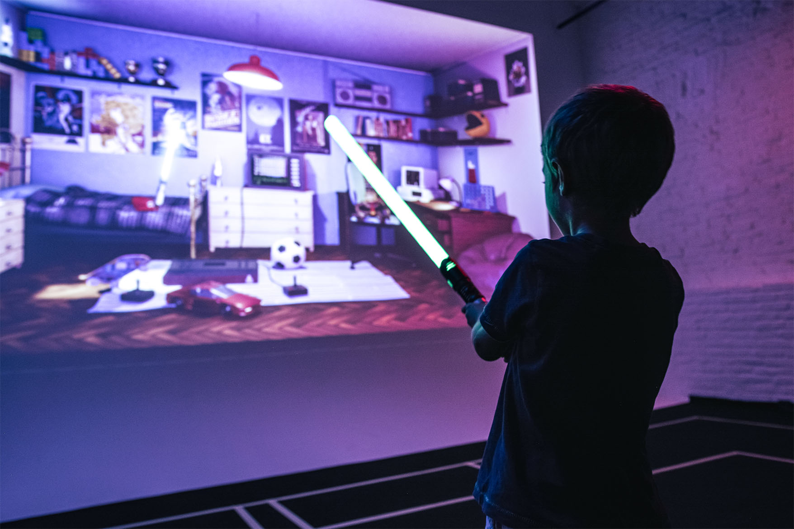
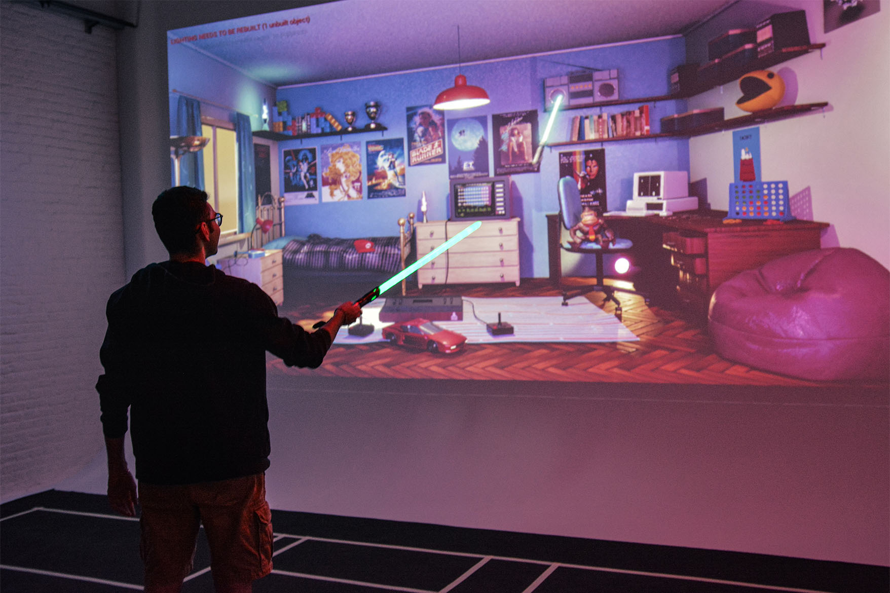
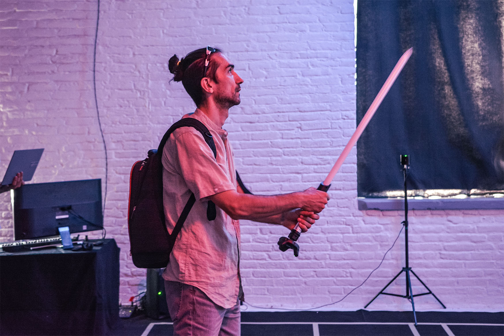
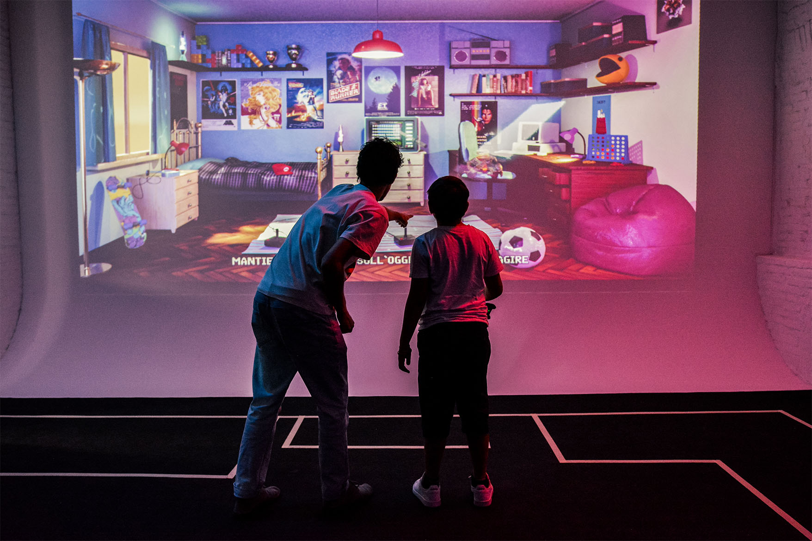

Arcade culture in an interactive 3D installation.
This thesis investigates the development, communicative potential and critical challenges of interactive installations through a practical case study: a walkable 3D experience centred on 1980s arcade games, presented at Graphic Days 2022.
The project explores new forms of communication through available technologies, combining play and learning in a shared intergenerational experience. Adults revisit the arcade games of their youth; children discover them through play and imagine their parents’ childhood, opening space for dialogue.
White lines on the floor mark the footprint of the virtual room, aligning movement through the physical installation with movement inside the digital space.
The virtual room contains three groups of interactive objects: seven references to 1980s arcade games, objects with physical counterparts and a set of musical elements.
Every element was modelled in Blender and the interaction developed in Unreal Engine. An HTC Vive Tracker attached to the lightsaber transmits the user’s movement to the virtual space in real time.
A lightsaber acts as the interface with the virtual world. Its familiar form is immediately legible, while its length lets children reach objects positioned higher in the scene.


Interacting with any of the seven arcade references opens a panel with period gameplay footage and essential information about the game.



